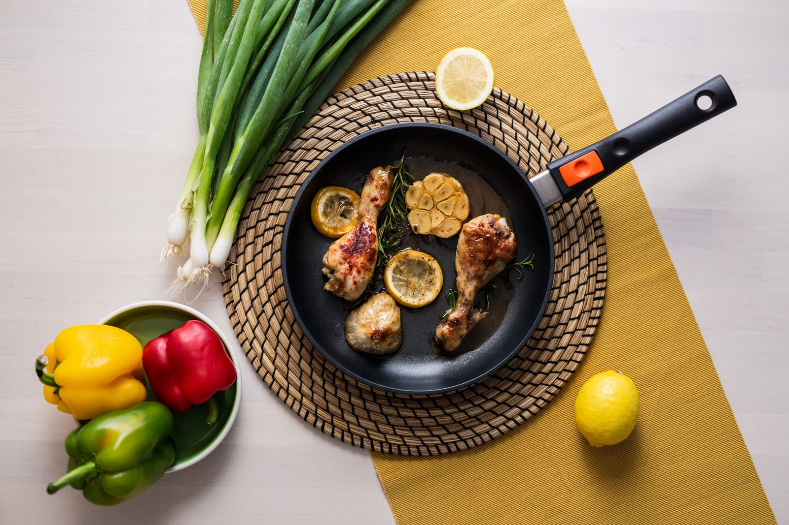

Less “what’s for dinner?”
More dinner.
Five dinners. One shop. Tomorrow’s lunch taken care of.

This week’s line-up
Lemon-paprika chicken, potatoes & broccoli
40–45 minutes totalCook this Tuesday02Beef & black-bean tacos with corn and lemon slaw
30 minutes totalCook this Wednesday03Tomato-beef pasta with spinach
30 minutes totalCook this Thursday04Oven chicken & egg fried rice
40–45 minutes totalCook this Friday05Creamy lemon-chickpea pasta with spinach
30 minutes totalCook thisGrab a cart.
Quantities include all five dinners and next-day lunches. Tick items off as you shop; this browser remembers.
All quantities cover dinners and lunches. Salt, olive oil and pepper assumed.
Meat & eggs
Produce
Canned, dry & frozen
Check the cupboard
Milk-free labels: Check ingredients and allergen statements, particularly tortillas, rice and substitutions. No milk, butter, cream, cheese, whey or casein; lactose-free dairy is still unsuitable for a milk-protein allergy. No dairy substitutes are needed. Milk-free label guide
Let’s make dinner.
MONLemon-paprika chicken, potatoes & broccoli
8 portions · 20 minutes active · 40–45 minutes total
Ingredients
- 3 lb boneless, skinless chicken thighs
- 3 lb small potatoes, cut into ½-inch pieces
- 2 lb broccoli florets
- 2 lemons
- 4 garlic cloves, finely grated
- 2 tsp sweet paprika
- 6 tbsp olive oil, divided
- About 1½ tsp fine salt, divided; pepper to taste
- Water for steaming broccoli
Method
- Heat oven to 450°F, racks in upper and lower thirds. Divide potatoes between two large rimmed sheet pans. Toss with 2 tbsp oil total and ½ tsp salt. Roast 10 minutes.
- Meanwhile, toss chicken with 2 tbsp oil, garlic, paprika, zest of both lemons and ½ tsp salt.
- Turn potatoes and divide chicken between the pans, opening thighs flat and keeping food in a single layer. Roast 20–25 minutes, swapping racks halfway through, until chicken reaches 165°F and potatoes are tender. Allow extra time if needed.
- While the pans roast, put broccoli in a large pot with ½ inch water. Cover and steam 5–7 minutes, until tender; drain. Toss with remaining 2 tbsp oil, ½ tsp salt and juice of half a lemon.
- Squeeze another half-lemon over chicken and potatoes. Cut the second lemon into wedges.
Kids: Cut chicken small and let them add lemon. Lunch: Set aside half the chicken, potatoes and broccoli. Reheat covered with a splash of water; potatoes can be crisped separately if convenient.
TUEBeef & black-bean tacos with corn and lemon slaw
8 portions · 20 minutes active · 30 minutes total
Ingredients
- 2 lb lean ground beef
- 1 medium onion, finely diced
- 2 garlic cloves, finely grated
- 2 tsp sweet paprika
- 2 cans black beans (15 oz each), drained and rinsed
- 1 lb frozen corn
- 1 bag plain slaw mix (14 oz)
- 2 lemons
- 16–20 small soft tortillas
- 4 tbsp olive oil, divided
- ½ cup water
- Salt and pepper
Method
- Toss slaw with 2 tbsp lemon juice, 2 tbsp oil and a pinch of salt. Cut remaining lemons into wedges.
- Heat remaining 2 tbsp oil in a wide Dutch oven over medium-high heat. Add onion and beef. Cook 10–12 minutes, breaking up meat, until beef reaches 160°F. Drain excess fat if necessary.
- Add garlic and paprika; stir 30 seconds. Add beans, corn, water and about ½ tsp salt. Simmer 7–8 minutes, stirring, until hot and moist rather than watery. Taste and season.
- Warm only the dinner tortillas according to the package. Fill with beef mixture and slaw.
Kids: Serve filling, tortilla pieces and short-cut slaw separately. Lunch: Save half the filling and slaw separately, plus 8–10 tortillas. Reheat filling; warm tortillas fresh. Keep slaw cold.
WEDTomato-beef pasta with spinach
8 portions · 20 minutes active · 30 minutes total
Ingredients
- 1 lb dried small pasta
- 2 lb lean ground beef
- 1 medium onion, finely diced
- 4 garlic cloves, finely grated
- 2 cans crushed tomatoes (28 oz each)
- 1 bag baby spinach (10 oz), roughly chopped
- 2 tsp dried oregano
- 2 tbsp olive oil
- Salt and pepper
Method
- Start a covered pot of water boiling. Cook pasta in salted water as directed. Reserve 2 cups pasta water before draining.
- Meanwhile, heat oil in a large Dutch oven over medium-high heat. Cook onion and beef 10–12 minutes, breaking up the meat, until beef reaches 160°F. Drain excess fat if needed.
- Stir in garlic and oregano for 30 seconds. Add both cans of tomatoes and simmer uncovered 10 minutes, stirring occasionally.
- Add spinach; stir 2 minutes until wilted. Toss in pasta, adding a little pasta water only if needed. Taste before salting.
Kids: Chop spinach finely and use small pasta shapes. Lunch: Set aside half. Reheat with a splash of water to loosen the sauce.
THUOven chicken & egg fried rice
8 portions · 20 minutes active · 40–45 minutes total
An oven version for the larger batch: tender rice with some crisp edges, rather than wok-style fried rice. Use two wide roasting pans of at least 5 quarts each; shallow sheet pans are too small for the complete mixture.
Ingredients
- 2 lb boneless, skinless chicken thighs, cut into ½-inch pieces
- 8 eggs, beaten
- 6 plain cooked rice pouches (about 8.8 oz each; roughly 9 cups cooked rice)
- 2 lb broccoli florets, chopped small
- 1 bag plain slaw mix (14 oz)
- 1 lb frozen corn
- 4 garlic cloves, finely grated
- 6 tbsp reduced-sodium soy sauce, divided
- 4 tbsp olive oil, divided
Method
- Heat oven to 425°F, with racks in upper and lower thirds. Divide chicken, broccoli, slaw and corn between the two roasting pans. Add garlic, 3 tbsp oil total and 2 tbsp soy sauce total; toss and spread out.
- Roast 15 minutes. Meanwhile, squeeze rice pouches to break up clumps. Heat them according to their package directions; this helps the large batch heat evenly.
- Stir the hot rice and 2 more tbsp soy sauce total into the pans. Return to oven 10–15 minutes, swapping racks, until chicken reaches 165°F, broccoli is tender and the rice mixture is hot throughout. Allow more time if necessary.
- During the final oven stage, heat remaining 1 tbsp oil in a large nonstick skillet. Add beaten eggs and gently scramble until fully set, about 4–5 minutes.
- Fold scrambled eggs through both pans. Taste and add the remaining 2 tbsp soy sauce only as needed.
Kids: Keep soy sauce light; chop broccoli and chicken small. Lunch: Promptly portion half into shallow containers and refrigerate. Reheat covered, with a splash of water.
FRICreamy lemon-chickpea pasta with spinach
8 portions · 20 minutes active · 30 minutes total
Mashed chickpeas, olive oil and starchy pasta water make the sauce creamy without dairy.
Ingredients
- 1 lb dried small pasta
- 4 cans chickpeas (15 oz each), drained and rinsed
- 2 medium onions, finely diced
- 6 garlic cloves, finely grated
- 1 bag baby spinach (10 oz), roughly chopped
- 2 lemons
- 2 tsp dried oregano
- 6 tbsp olive oil
- Salt and pepper
Method
- Cook pasta in salted water according to the package. Reserve 4 cups pasta water before draining.
- Meanwhile, heat oil in a large Dutch oven over medium heat. Cook onions with a pinch of salt 8–10 minutes until soft. Add garlic and oregano; stir 30 seconds.
- Add chickpeas and 1½ cups pasta water, taken from the cooking pot. Simmer 4–5 minutes, then mash about half the chickpeas in the pot with a potato masher.
- Stir in spinach for 2 minutes until wilted. Add pasta, zest of both lemons and 2 tbsp lemon juice. Add more pasta water gradually until creamy and loose.
- Taste and season. Serve remaining lemon in wedges. Keep the sauce slightly loose because it thickens as it stands.
Kids: Mash chickpeas further if preferred; add extra lemon at the table. Lunch: Save half for Saturday. Reheat with a generous splash of water, stirring until creamy again.
Future you says thanks.
Five dairy-free dinners — 8 portions each
Each recipe makes 4 portions for dinner + 4 for lunch the next day. Quantities are doubled from the original family plan. Only chicken, beef, eggs and plant ingredients; no pork, shellfish or dairy. Kosher-certified meat is not required.
| Night | Dinner | Hands-on | Total |
|---|---|---|---|
| Monday | Lemon-paprika chicken, potatoes & broccoli | 20 min | 40–45 min |
| Tuesday | Beef & black-bean tacos with corn and lemon slaw | 20 min | 30 min |
| Wednesday | Tomato-beef pasta with spinach | 20 min | 30 min |
| Thursday | Oven chicken & egg fried rice | 20 min | 40–45 min |
| Friday | Creamy lemon-chickpea pasta with spinach | 20 min | 30 min |
Times are estimates for these larger batches and include chopping. No weekend batch cooking required. Buy precut broccoli and bagged slaw. Monday needs two large rimmed sheet pans; Thursday needs two wide roasting pans, each at least 5 quarts, to avoid overfilling. Other dinners use a large pot or Dutch oven.
Put away today
Refrigerate Monday's 3 lb chicken. Freeze Thursday's 2 lb chicken and the two 2 lb beef portions in thin, separate packages. Move Tuesday's beef to the fridge Monday morning, Wednesday's beef Tuesday morning, and Thursday's chicken Wednesday morning. Allow at least 24 hours, longer for thick packages; thaw in the fridge. Raw poultry and ground beef keep 1–2 days refrigerated. Storage chart
Keep the Friday spinach bag unopened until Friday. Keep Thursday's slaw unopened until Thursday; choose produce dated through use.
Overlap and leftovers from shopping
| Ingredient | Used across | What remains |
|---|---|---|
| Chicken, 5 lb | Monday + Thursday | None |
| Beef, 4 lb | Tuesday + Wednesday | None |
| Broccoli, 4 lb | Monday + Thursday | None |
| Slaw, two bags | Tuesday + Thursday | None |
| Spinach, two bags | Wednesday + Friday | None |
| Pasta, 2 lb | Wednesday + Friday | None |
| Corn, 2 lb | Tuesday + Thursday | None |
| Onions, four; lemons, six | Across the week | None |
| Garlic, two bulbs | 20 cloves across all five meals | Extra cloves: next week's roast vegetables |
| Beans, chickpeas, crushed tomatoes | Whole cans | No opened partial cans |
| Rice pouches | Thursday | None |
| Tortillas | Tuesday dinner + Wednesday lunch | Freeze any package surplus now for next week's egg-and-bean tacos |
| Eggs, dozen | Eight Thursday | Four for breakfast |
| Paprika + oregano | Two dinners each | Use jars next week on chicken, potatoes and tomato sauce; store dry |
| Soy sauce | Thursday | Next week use 2–3 tbsp in chicken-and-broccoli stir-fry or egg fried rice; store per label |
No cream alternatives, fresh-herb bunches, or partially used specialty ingredients.
Lunch storage
Reserve four portions before serving dinner. Refrigerate in shallow containers within 2 hours (within 1 hour above 90°F); don't leave rice out to cool for hours. Keep slaw separate from hot food. Use refrigerated cooked leftovers within 3–4 days; these lunches are intended for the next day. Reheat leftovers to 165°F. USDA handling guidance · Storage times · Cooking temperatures